Timeless Elegance
大和郡山で紡ぐ、大人の隠れ家
Scroll
Since 1978
Bar Sally
1978年の創業以来、
大和郡山の人々に愛され続けてきたBar Sally。
奈良の木材をふんだんに使用した
温かみのある空間は、
まるで誰かの家に招かれたような
安らぎを覚えます。
グラスを傾けながら、
静かに流れる時間をお楽しみください。
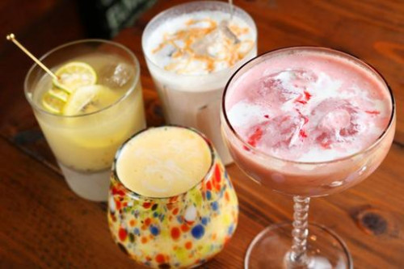
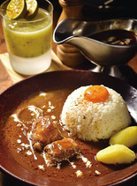
Master
新田豊 サリー Yutaka Nitta Sally
ならしか 代表 / Bar Sally 2代目Master
株式会社a-３なら創楽 実行委員長
なら３９project 事務局長
盛経塾大和 世話人
Atmosphere
Gallery
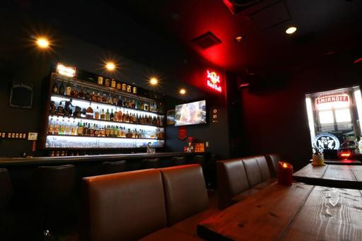
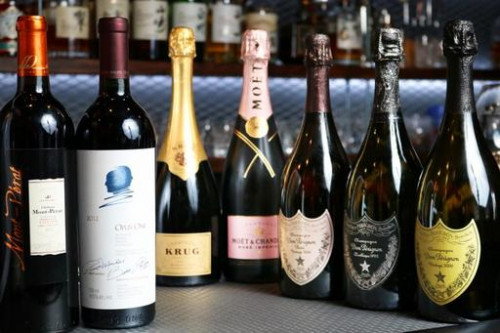
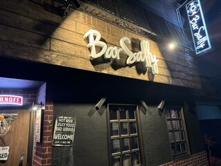
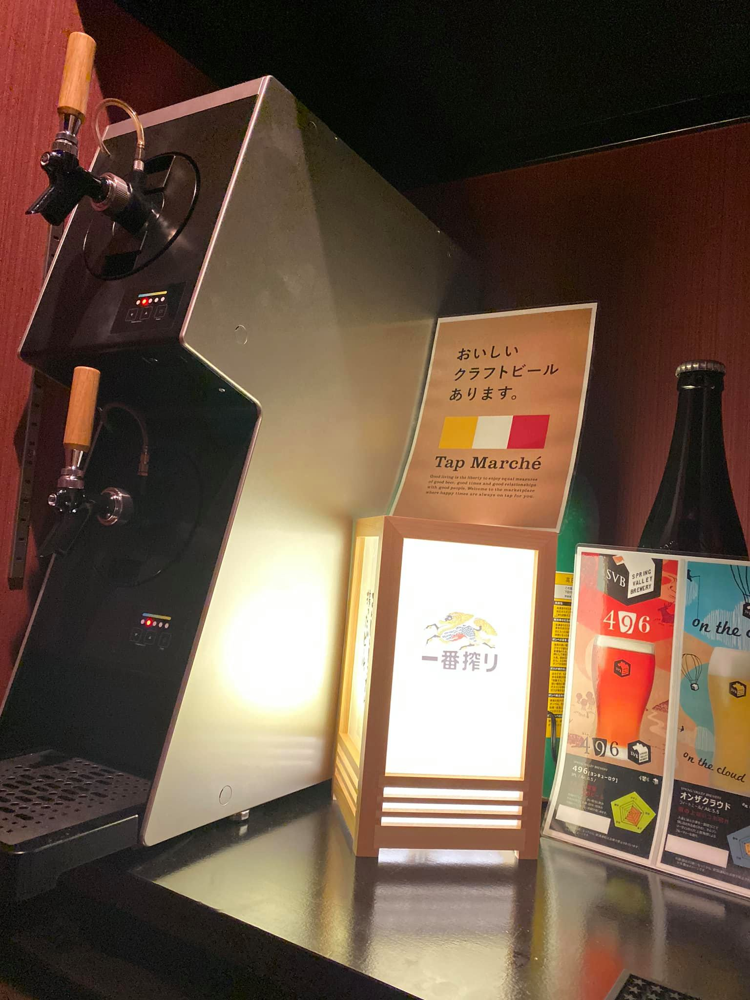
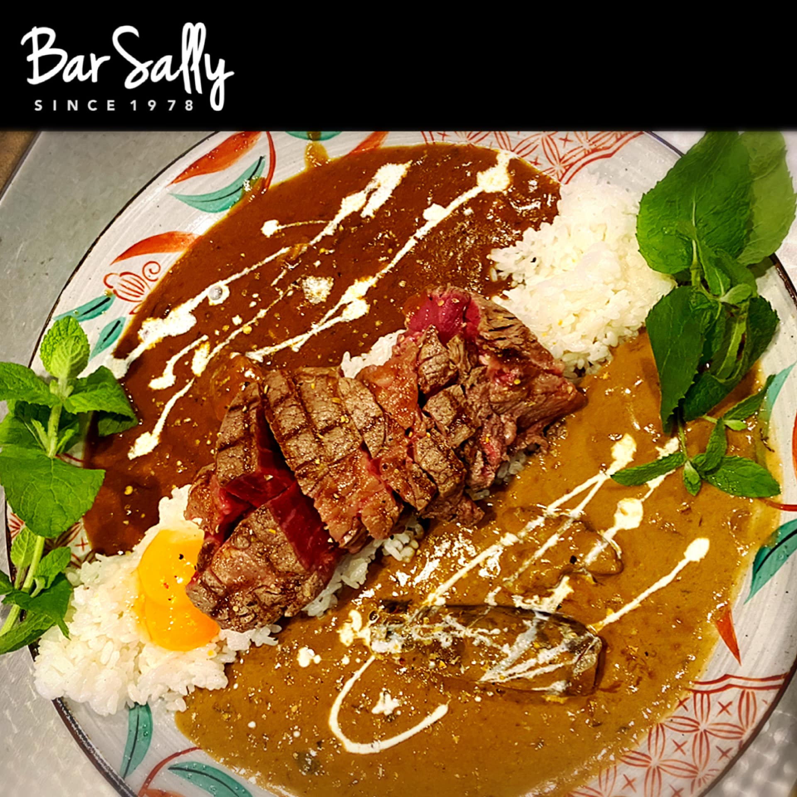
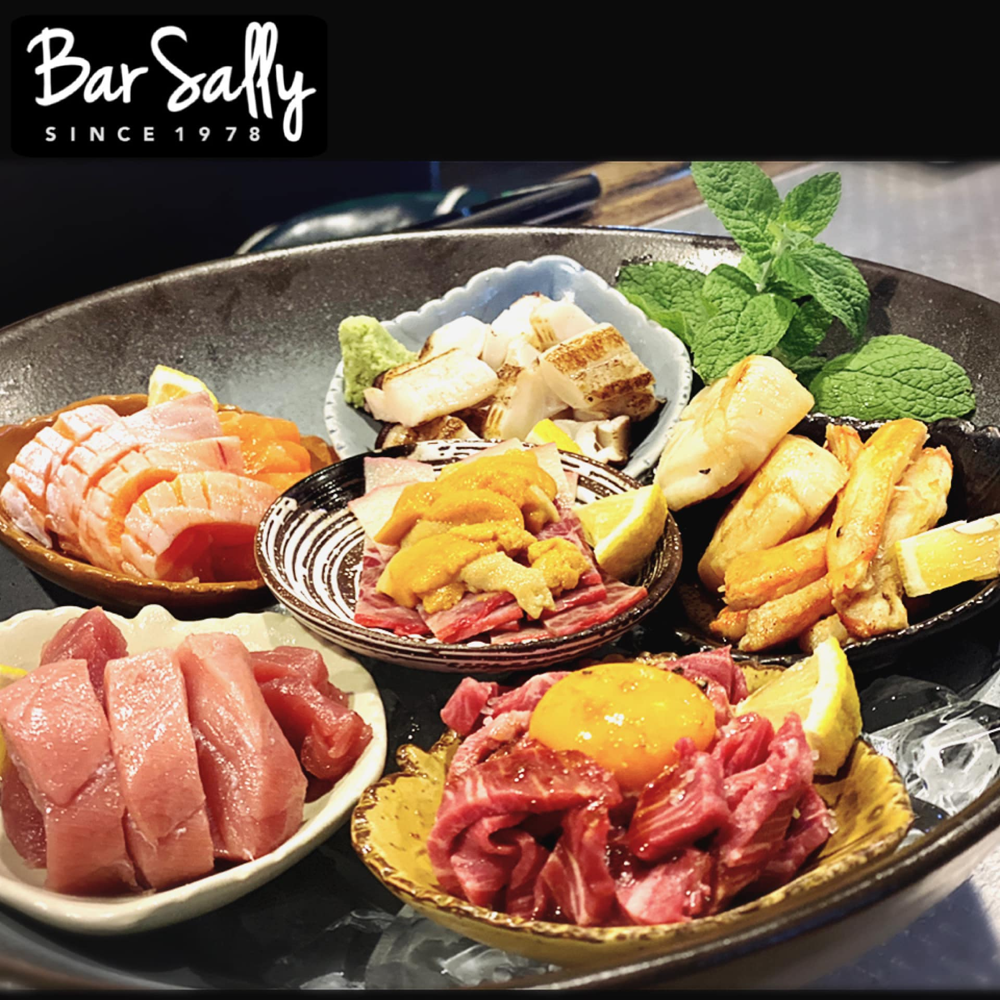
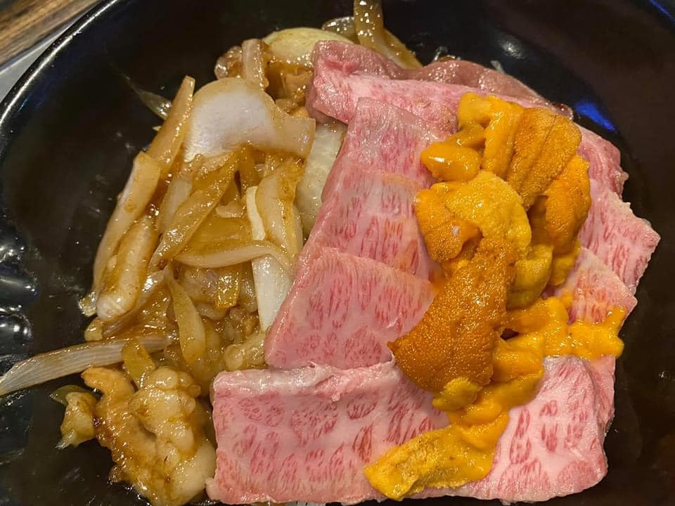
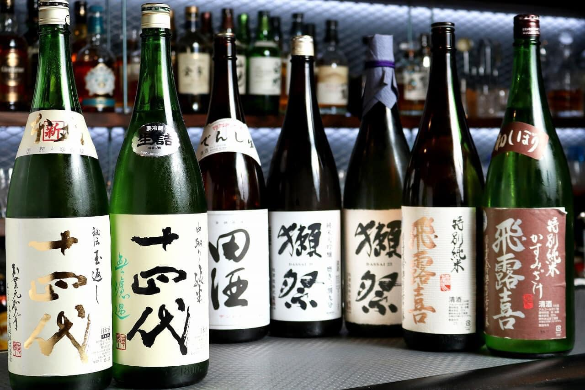
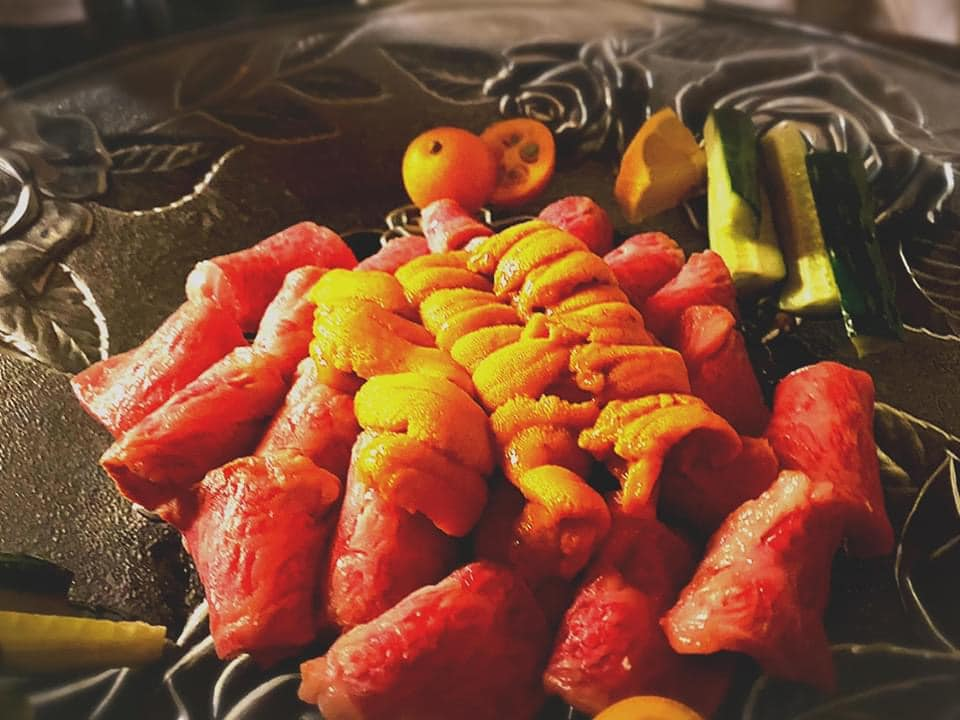
Information
Access
- Address
- 〒639-1160
奈良県大和郡山市北郡山町137-1 - Tel
- 0743-55-3001
- Open
- 19:00 - Last
- Closed
- 月曜日 (祝前日は営業)